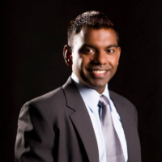

<link rel="import" href="../bower_components/polymer/polymer.html">

<link rel="import" href="../bower_components/paper-card/paper-card.html">

<link rel="import" href="talk-styles.html">

<dom-module id="talks-guest-lectures">
<style include="talk-styles"></style>
<template>
	<div class="header">
		<span>Guest Lectures</span>
	</div>
	<paper-card class="container" elevation="3">		
		<div class="content">
			<div class="title">
				
			</div>
			<div class="description">
				<h2>Varun Chandran</h2>
				<h3>Founder &amp; CEO, Corporate360</h3>
				<p>Ranjith is an accomplished innovator and an Agile technical consultant with over 10+ years of experience in the software industry. He specializes in strategic intelligence and planning, business transformation, and collaborative culture. He has been an integral part of the R &amp; D departments in large scale product companies and has 8 patents on software architecture, Human Computer Interaction, image processing and graphics.</p>
				<p>He has got several patents in the software field.</p>
			</div>
		</div>
	</paper-card>
	<paper-card class="container" elevation="3">
		<div class="content">
			<div class="title">
				
			</div>
			<div class="description">
				<h2>Nitesh Kadyan</h2>
				<p>Nitesh is a computer scientist, a hardware hacker and an amateur flutist. He likes to build stuff using laser cutting, 3D printing, leds and junk hardware. He has made his own 3D printer for printing with edible materials like chocolate and halva using opensource tools. He also works in robotics. As an exchange student, he has worked with Professor Raul Rojas at Free University Berlin, and programmed a simultaneous localization and mapping (SLAM) algorithm for a small autonomous car. At IIIT Bangalore, he has worked on programming a collision avoidance mechanism for the prototype of an autonomous wheelchair using bio-inspired collision avoiding behavior of a grasshopper.</p>
				<p>He is the Co-founder Graviky Labs Pvt Ltd. Graviky Labs is a spinoff via MIT Media Lab. They fuse disciplines, technologies, design thinking to build high impact deployable systems, products and visions.Some of his achievements include receiving the Campus Diaries 25 Under 25 award, being Design and Innovation fellow at MIT Media Lab India initiative. He has participated in MIT Global Startup Labs 2014, and in MIT Media Lab Design and Innovation workshop 2015. He was also one of the speakers at TedxIIFT Delhi 2015, and at The Goa Project 2015.</p>
			</div>
		</div>
	</paper-card>
</template>
<script>
	Polymer({
		'is': 'talks-guest-lectures'
	});
</script>
</dom-module>